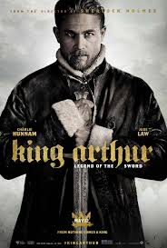
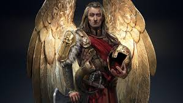

Modern Legends
In the latter half of the 20th century, the influence of the romance tradition of Arthur continued, through novels such as T. H. White's The Once and Future King (1958) and Marion Zimmer Bradley's The Mists of Avalon (1982) in addition to comic strips such as Prince Valiant (from 1937 onward). Tennyson had reworked the romance tales of Arthur to suit and comment upon the issues of his day, and the same is often the case with modern treatments too. Bradley's tale, for example, takes a feminist approach to Arthur and his legend, in contrast to the narratives of Arthur found in medieval materials, and American authors often rework the story of Arthur to be more consistent with values such as equality and democracy. In John Cowper Powys's Porius: A Romance of the Dark Ages (1951), set in Wales in 499, just prior to the Saxon invasion, Arthur, the Emperor of Britain, is only a minor character, whereas Myrddin (Merlin) and Nineue, Tennyson's Vivien, are major figures. Myrddin's disappearance at the end of the novel is "in the tradition of magical hibernation when the king or mage leaves his people for some island or cave to return either at a more propitious or more dangerous time". Powys's earlier novel, A Glastonbury Romance (1932) is concerned with both the Holy Grail and the legend that Arthur is buried at Glastonbury.
The romance Arthur has become popular in film and theatre as well. T. H. White's novel was adapted into the Lerner and Loewe stage musical Camelot (1960) and Walt Disney's animated film The Sword in the Stone (1963); Camelot, with its focus on the love of Lancelot and Guinevere and the cuckolding of Arthur, was itself made into a film of the same name in 1967. The romance tradition of Arthur is particularly evident and in critically respected films like Robert Bresson's Lancelot du Lac (1974), Éric Rohmer's Perceval le Gallois (1978) and John Boorman's Excalibur (1981); it is also the main source of the material used in the Arthurian spoof Monty Python and the Holy Grail (1975).
Retellings and reimaginings of the romance tradition are not the only important aspect of the modern legend of King Arthur. Attempts to portray Arthur as a genuine historical figure of c. 500, stripping away the "romance", have also emerged. As Taylor and Brewer have noted, this return to the medieval "chronicle tradition" of Geoffrey of Monmouth and the Historia Brittonum is a recent trend which became dominant in Arthurian literature in the years following the outbreak of the Second World War, when Arthur's legendary resistance to Germanic enemies struck a chord in Britain. Clemence Dane's series of radio plays, The Saviours (1942), used a historical Arthur to embody the spirit of heroic resistance against desperate odds, and Robert Sherriff's play The Long Sunset (1955) saw Arthur rallying Romano-British resistance against the Germanic invaders. This trend towards placing Arthur in a historical setting is also apparent in historical and fantasy novels published during this period. In recent years the portrayal of Arthur as a real hero of the 5th century has also made its way into film versions of the Arthurian legend, most notably the TV series' Arthur of the Britons (1972–73) and The Legend of King Arthur (1979), and the feature films King Arthur (2004) and The Last Legion (2007).
Arthur has also been used as a model for modern-day behaviour. In the 1930s, the Order of the Fellowship of the Knights of the Round Table was formed in Britain to promote Christian ideals and Arthurian notions of medieval chivalry. In the United States, hundreds of thousands of boys and girls joined Arthurian youth groups, such as the Knights of King Arthur, in which Arthur and his legends were promoted as wholesome exemplars. However, Arthur's diffusion within modern culture goes beyond such obviously Arthurian endeavours, with Arthurian names being regularly attached to objects, buildings, and places. As Norris J. Lacy has observed, "The popular notion of Arthur appears to be limited, not surprisingly, to a few motifs and names, but there can be no doubt of the extent to which a legend born many centuries ago is profoundly embedded in modern culture at every level."